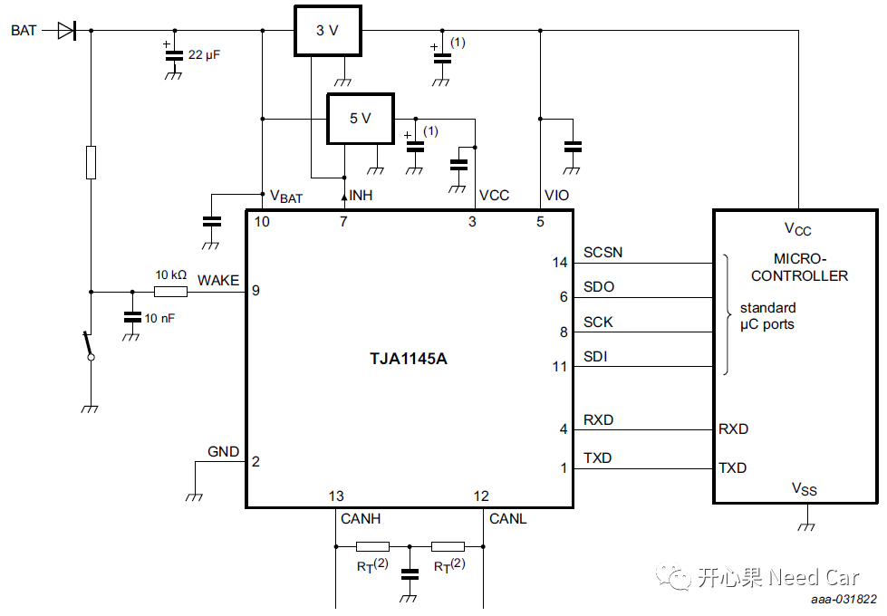
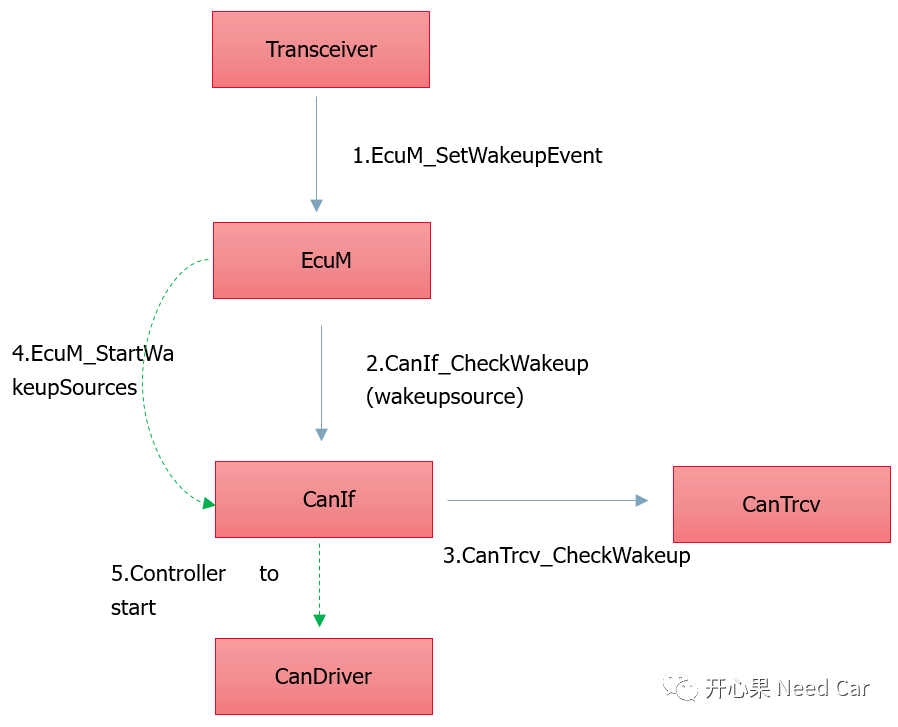

开心果 Need Car · 2021-10-01T20:32:00+08:00 · 微信原文
在汽车行业CAN总线是应用场景最多的情况，本文也基于CAN总线进行网络管理与Transceiver/Controller关系梳理。
AUTOSAR NM涉及到的模块包括Transceiver、CAN Driver、CANIf、CANSM、CANNM、PDUR、Com、ComM、EcuM、BswM等。由于模块众多，小编会分多篇梳理。
本篇就网络管理和Transceiver、Controler关系理一理。
为什么要谈Transceiver？因为任何上层意图的执行实际都是对底层硬件模块的操作，网络管理也不例外。
在讨论网络管理之前，问一个问题，ECU如何供电的？因为只有ECU上电并且程序运行以后才有网络管理。所以不要混淆ECU上电和网络管理激活，ECU上电并不等于网络管理激活。本例以Transceiver1145(1)为例说一下ECU如何上电。

如上图，当BAT（等价于KL30，本例不用KL15）给Transceiver1145供电后，Transceiver1145的INH引脚激活3V电源管理模块，进而给主芯片供电，当主芯片供电以后，程序开始运行，但此时网络处于BSM（Bus Sleep Mode），ECU并不能立马外发报文，需要对唤醒事件进行有效性验证，避免因总线抖动或者其他干扰造成的ECU无效唤醒。
如果程序（上层模块，如CANNM）想要识别当前是否收到网络管理报文应该具备什么条件？
如果ECU想正常的收发报文需要Transceiver1145和Controller进入各自的工作状态。先说Transceiver1145，对于Transceiver1145需要切换到Normal Mode（通过SPI发送Normal指令），此时Transceiver1145才能将模拟信号和数字信号进行转换；虽然Transceiver1145可以将模拟信号和数字信号进行转换，但是此时ECU还不能将报文传输给上层模块，即此时还不能正常的收发报文，因为Controller没有正常工作，只有当Controller也正常工作以后，ECU才能正常的收发报文。
Controller如何进入正常的工作模式呢？Controller进入到正常的工作模式就需要了解ECU的唤醒过程。本例以Transceiver唤醒检查为例分析ECU唤醒流程。

如上图，Transceiver1145在初始化或者handler程序中检查唤醒源，判断到上电或者CAN总线干扰事件时会通知EcuM有唤醒事件，之后EcuM通过CanIf模块调用CanTrcv_CheckWakeup检查唤醒源。如果EcuM使能了唤醒源的检查，则EcuM调用EcuM_StartWakeupSources接口，该操作的实质是使得Controller进入Start状态，至此Transceiver1145和Controller均进入了对应的工作状态，ECU具备了收发报文的能力。注意，Controller需要从STOPPED状态切换到STARTED状态。
（1）IC NXP TJA1145A REV1 23AUG2019.pdf